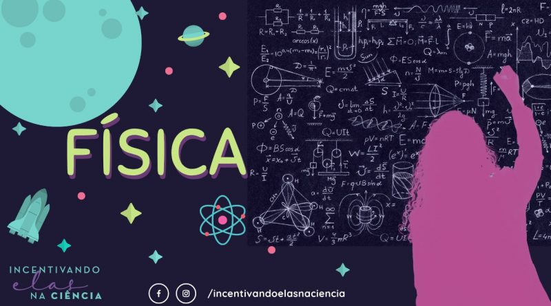

Seja Bem-Vindo ao Repensando a Física
O portal Repensando a Física apresenta inúmeras páginas com conteúdos, exercícios, provas on-line, jogos, curiosidades, dicionário e muito mais do mundo da Física e suas aplicações.
O que estuda a Física ?
Segundo o portal de Física da Universidade Federal de Minas Gerais, a Física é o campo da ciência que investiga os fenômenos e as estruturas mais fundamentais da natureza, procurando sua compreensão e descrição em termos de leis mais gerais possíveis. Com essas leis, a Física estuda desde partículas sub-atômicas e sua estruturação em átomos e moléculas, até fenômenos que envolvem grandes aglomerados destes, como cristais, metais, polímeros, materiais amorfos, semi-condutores e super-condutores. Em uma escala maior essas leis são usadas para o estudo da Terra e dos fenômenos que ocorrem em sua atmosfera. Aumentando mais ainda a escala, essas mesmas leis permitem uma descrição do Sistema Solar, das estrelas e das galáxias bem como do Universo como um todo, além da criação de modelos para a sua evolução.